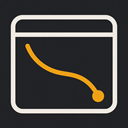

<!doctype html>
<html lang="zh-CN">
<meta charset="utf-8" />
<meta name="viewport" content="width=device-width, initial-scale=1" />
<title>vcorp-chrome</title>
<style>
  :root {
    color-scheme: light dark;
    --bg: #fafaf9; --card: #ffffff; --ink: #1c1917; --mute: #78716c; --line: rgba(0,0,0,.07);
    --soft: rgba(0,0,0,.04); --ok: #16a34a; --warn: #d97706; --bad: #dc2626; --accent: #2563eb;
  }
  @media (prefers-color-scheme: dark) {
    :root { --bg: #161616; --card: #1f1f1f; --ink: #f2f2f2; --mute: #a1a1aa; --line: rgba(255,255,255,.08);
            --soft: rgba(255,255,255,.05); --ok: #22c55e; --warn: #f59e0b; --bad: #f87171; --accent: #60a5fa; }
  }
  * { box-sizing: border-box; }
  [hidden] { display: none !important; }
  body { margin: 0; background: var(--bg); color: var(--ink);
         font: 13px/1.6 -apple-system, BlinkMacSystemFont, "PingFang SC", "Microsoft YaHei", sans-serif; }
  header { display: flex; align-items: center; gap: 10px; padding: 14px 16px 10px; }
  header img { width: 30px; height: 30px; border-radius: 50%; }
  header .t { font-weight: 600; font-size: 14px; }
  header .v { color: var(--mute); font-size: 11px; margin-left: 4px; font-weight: 400; }
  .pill { margin-left: auto; display: flex; align-items: center; gap: 6px; font-size: 11.5px; color: var(--mute);
          padding: 3px 9px; border-radius: 999px; background: var(--soft); }
  .dot { width: 8px; height: 8px; border-radius: 50%; background: #a8a29e; flex: none; }
  .dot.ok { background: var(--ok); } .dot.warn { background: var(--warn); } .dot.bad { background: var(--bad); }
  main { padding: 0 12px 20px; display: flex; flex-direction: column; gap: 12px; }
  section { background: var(--card); border: 1px solid var(--line); border-radius: 12px; padding: 12px 14px; }
  h2 { margin: 0 0 8px; font-size: 11px; letter-spacing: .8px; color: var(--mute); font-weight: 500; }
  .empty { color: var(--mute); font-size: 12.5px; }
  .owner { display: flex; align-items: center; gap: 8px; margin-bottom: 8px; }
  .owner .sw { width: 10px; height: 10px; border-radius: 50%; flex: none; }
  .owner .who { font-weight: 600; }
  .owner .code { color: var(--mute); font-size: 11px; font-variant-numeric: tabular-nums; }
  .blk { margin-top: 10px; }
  .lab { font-size: 10.5px; letter-spacing: .6px; color: var(--mute); margin-bottom: 2px; }
  /* agent 说的话带引用边，扩展观察到的事实平铺——前者可能源自被注入的页面 */
  .intent { border-left: 2px solid var(--c, #888); padding-left: 8px; }
  .ago { color: var(--mute); font-size: 10.5px; margin-left: 6px; font-variant-numeric: tabular-nums; }
  .now { display: flex; align-items: center; gap: 7px; font-weight: 500; }
  .pulse { width: 7px; height: 7px; border-radius: 50%; animation: pulse 1.4s ease-in-out infinite; flex: none; }
  @keyframes pulse { 0%, 100% { opacity: 1; } 50% { opacity: .25; } }
  .tl { display: flex; flex-direction: column; gap: 3px; max-height: 260px; overflow-y: auto; }
  .tl .row { display: flex; gap: 10px; font-size: 12px; color: var(--mute); }
  .tl .row:first-child { color: var(--ink); }
  .tl .row .ago { flex: none; width: 46px; text-align: right; margin: 0; }
  .sess { display: flex; flex-direction: column; gap: 2px; }
  .sess button { all: unset; display: flex; align-items: center; gap: 8px; padding: 6px 8px; margin: 0 -8px;
                 border-radius: 8px; cursor: pointer; font-size: 12.5px; }
  .sess button:hover { background: var(--soft); }
  .sess button[disabled] { cursor: default; }
  .sess button[disabled]:hover { background: none; }
  .sess .who { font-weight: 600; flex: none; }
  .sess .page { color: var(--mute); overflow: hidden; text-overflow: ellipsis; white-space: nowrap; }
  .light { display: flex; align-items: flex-start; gap: 9px; padding: 6px 0; }
  .light .dot { margin-top: 6px; }
  .light .name { font-weight: 500; }
  .light .sub { color: var(--mute); font-size: 12px; }
  .cmd { display: flex; align-items: center; gap: 6px; margin-top: 6px; }
  code { font: 11.5px/1.5 ui-monospace, SFMono-Regular, Menlo, monospace; background: var(--soft);
         padding: 4px 7px; border-radius: 6px; word-break: break-all; flex: 1; }
  button.btn { font: inherit; font-size: 12px; border: 0; border-radius: 7px; padding: 5px 10px; cursor: pointer;
               background: var(--accent); color: #fff; flex: none; }
  button.btn.ghost { background: var(--soft); color: var(--ink); }
  button.btn:disabled { opacity: .45; cursor: default; }
  .sw-row { display: flex; align-items: center; gap: 10px; padding: 7px 0; }
  .sw-row .txt { flex: 1; }
  .sw-row .sub { color: var(--mute); font-size: 11.5px; }
  .toggle { appearance: none; width: 34px; height: 20px; border-radius: 10px; background: #d6d3d1; position: relative;
            cursor: pointer; flex: none; transition: background .15s; margin: 0; }
  .toggle::after { content: ''; position: absolute; top: 2px; left: 2px; width: 16px; height: 16px; border-radius: 50%;
                   background: #fff; transition: transform .15s; box-shadow: 0 1px 2px rgba(0,0,0,.2); }
  .toggle:checked { background: var(--ok); }
  .toggle:checked::after { transform: translateX(14px); }
  footer { color: var(--mute); font-size: 11.5px; padding: 0 16px 18px; }
  /* 云端发布 */
  .field { display: flex; flex-direction: column; gap: 4px; margin-top: 8px; }
  .field input[type=text] { font: inherit; padding: 6px 8px; border-radius: 7px; border: 1px solid var(--line);
                            background: var(--bg); color: var(--ink); }
  .field input.code { font: 15px/1.4 ui-monospace, SFMono-Regular, Menlo, monospace; letter-spacing: 2px; text-transform: uppercase; }
  .row { display: flex; gap: 6px; align-items: center; margin-top: 8px; flex-wrap: wrap; }
  .msg { font-size: 12px; margin-top: 6px; }
  .msg.bad { color: var(--bad); }
  .confirm { border: 1px solid var(--warn); border-radius: 9px; padding: 9px 10px; margin-top: 8px; }
  .confirm b { word-break: break-all; }
  .plats { display: grid; grid-template-columns: 1fr 1fr; gap: 2px 10px; margin-top: 4px; }
  .plats label { display: flex; gap: 6px; align-items: center; font-size: 12.5px; cursor: pointer; }
  .task { border-top: 1px solid var(--line); padding: 8px 0 2px; margin-top: 6px; }
  .task .t { font-weight: 500; word-break: break-all; }
  .task .sub, .muted { color: var(--mute); font-size: 11.5px; }
  .task.pending { border-left: 3px solid var(--warn); padding-left: 8px; }
  .log { max-height: 220px; overflow-y: auto; font-size: 11.5px; color: var(--mute); margin-top: 6px; }
  .log div { display: flex; gap: 8px; }
  .log .ago { flex: none; width: 46px; text-align: right; margin: 0; }
  .log .no { color: var(--bad); }
  details summary { cursor: pointer; color: var(--mute); font-size: 12px; margin-top: 8px; }
  a { color: var(--accent); }
  a.guide { display: flex; text-decoration: none; color: inherit; cursor: pointer; border-radius: 8px; margin: 0 -6px; padding-left: 6px; padding-right: 6px; }
  a.guide:hover { background: var(--soft); }
  a.guide .go { color: var(--accent); font-size: 12px; flex: none; }
</style>

<header>
  
  <div class="t">vcorp-chrome<span class="v" id="ver"></span></div>
  <div class="pill"><span class="dot" id="pilldot"></span><span id="pilltxt">检查中…</span></div>
</header>

<main>
  <section>
    <h2>这一页</h2>
    <div id="page"><div class="empty">读取中…</div></div>
  </section>

  <section>
    <h2>所有在线的 agent</h2>
    <div class="sess" id="sess"></div>
  </section>

  <section>
    <h2>连接</h2>
    <div id="lights"></div>
    <div class="cmd" id="reconnRow" hidden><button class="btn" id="reconn">重连</button>
      <span class="sub" style="color:var(--mute);font-size:12px">插件没消失，断的只是到终端的连接</span></div>
  </section>

  <section id="cloud">
    <h2>云端发布</h2>
    <!-- 没配对 -->
    <div id="cloudPair" hidden>
      <div class="muted">让 maker.vcorp.ai 在这个浏览器里替你把视频发到抖音、小红书这些平台——用的是你已经登录好的账号，
        平台的 cookie 不会离开这台电脑。到网页上「平台账号 → 连接浏览器」拿一个配对码填在这里。</div>
      <div class="field">
        <input type="text" class="code" id="pairCode" maxlength="9" placeholder="ABCD-EFGH" autocomplete="off" spellcheck="false" />
      </div>
      <details>
        <summary>服务器地址</summary>
        <div class="field"><input type="text" id="pairOrigin" spellcheck="false" /></div>
        <div class="muted">只有自建了服务才需要改。</div>
      </details>
      <div class="row"><button class="btn" id="pairGo">下一步</button></div>
    </div>
    <!-- 配对第一步完成，等用户确认账号 -->
    <div id="cloudClaim" hidden>
      <div class="confirm">
        <div>要把这个浏览器交给 <b id="claimOrigin"></b> 上的账号 <b id="claimAccount"></b> 吗？</div>
        <div class="muted" style="margin-top:4px">确认后，这个账号可以在你勾选的平台上替你发布。配对码如果是别人发给你的，点取消。</div>
        <div class="row"><button class="btn" id="claimYes">确认连接</button><button class="btn ghost" id="claimNo">取消</button></div>
      </div>
    </div>
    <!-- 已配对 -->
    <div id="cloudOn" hidden>
      <div class="light"><span class="dot" id="cloudDot"></span>
        <div><div class="name" id="cloudName"></div><div class="sub" id="cloudSub"></div></div></div>
      <div class="lab" style="margin-top:6px">允许它使用的平台</div>
      <div class="plats" id="cloudPlats"></div>
      <div class="muted" style="margin-top:4px">只勾你确实要交给它发布的。没勾的平台，它连页面都打不开。</div>
      <div id="cloudTasks"></div>
      <label class="sw-row">
        <span class="txt">自动允许新任务<div class="sub">不再逐个弹窗确认。只在你信任这个账号、且只勾了要发的平台时打开。不管额外网站：发布任务临时申请的网站，以及操作其它网站的任务，每个网站都要你点头</div></span>
        <input type="checkbox" class="toggle" id="cloudAuto" />
      </label>
      <label class="sw-row">
        <span class="txt">暂停<div class="sub">立刻断开，云端的命令一条都不接，直到你再打开</div></span>
        <input type="checkbox" class="toggle" id="cloudPause" />
      </label>
      <details>
        <summary>操作记录</summary>
        <div class="log" id="cloudLog"></div>
      </details>
      <div class="row"><button class="btn ghost" id="cloudReconn">重连</button><button class="btn ghost" id="cloudUnpair">断开并忘记这个服务器</button></div>
    </div>
    <div class="msg bad" id="cloudErr" hidden></div>
  </section>

  <section>
    <h2>设置</h2>
    <a class="sw-row guide" id="guide" href="welcome.html">
      <span class="txt">开始使用<div class="sub">配对码、接上本机 agent、第一句怎么说</div></span>
      <span class="go">打开</span>
    </a>
    <label class="sw-row">
      <span class="txt">高保真模式<div class="sub">需要时用浏览器级真实输入，应付严格的站点和富文本编辑器；用完自动断开</div></span>
      <input type="checkbox" class="toggle" id="l2" />
    </label>
    <label class="sw-row">
      <span class="txt">页面标记<div class="sub">被操作的页面带彩色描边、光标和小头像；录屏演示时可以关掉</div></span>
      <input type="checkbox" class="toggle" id="mark" />
    </label>
  </section>
</main>

<footer>连不上时在终端跑 <code style="padding:1px 5px">npx huashu-chrome doctor</code>，它会告诉你卡在哪一步。</footer>

<script type="module" src="panel.js"></script>
</html>
